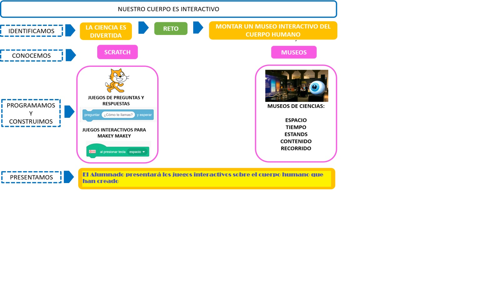

Una vez que hemos terminado nuestro proyecto, es el momento de reflexionar sobre lo que hemos aprendido.
Una vez que hemos terminado nuestro proyecto, es el momento de reflexionar sobre lo que hemos aprendido.
Teníamos un reto realmente difícil, pero lo hemos conseguido: conocer el cuerpo humano, aprender a hacer juegos y realizar una visita virtual a un museo.
En el camino hemos aprendido a elaborar juegos de preguntas y respuestas con Scratch; hemos logrado saber mucho sobre el cuerpo humano, así como sus aparatos y sistemas y la programación de Scratch.
Por otro lado, hemos aprendido también sobre los museos, especialmente los de Ciencias.
Debes estar satisfecha o satisfecho con todo el trabajo que has realizado y que puedes ver resumido a continuación en la siguiente imagen:
